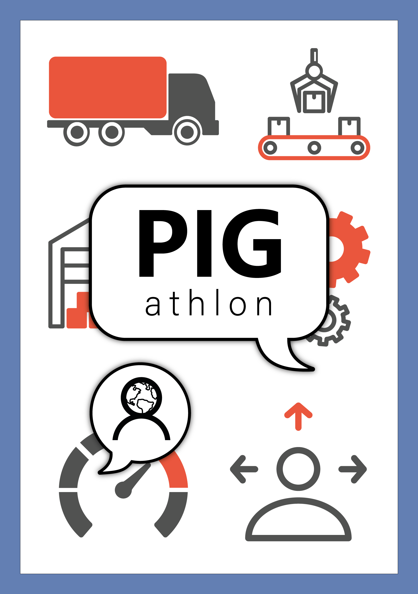
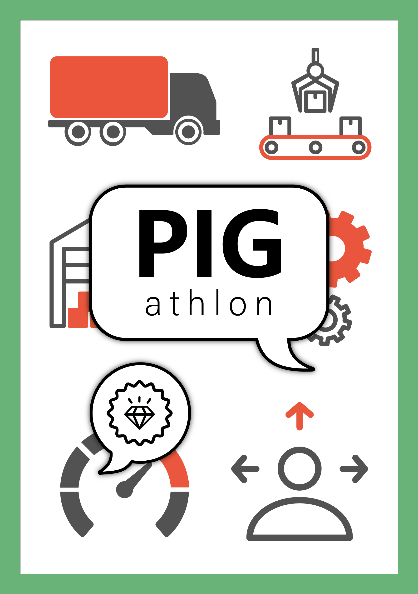

Retour
PIGathlon
Le PIGathlon est un jeu de cartes coopératif fictif inventé par un groupe d'amis étudiant à l'UTT dans le cadre d'un de leurs cours. Le PIG est un indice de performance d'entreprise axé sur les performances de celle-ci mais également sur le respect employé, le respect de l'environnement, les qualités du produit ou du service ou la prestation (transport, temps de transport, satisfaction client). J'ai proposé de donner une identité visuelle à leur projet en réalisant les illustrations de leur jeu.


Une phase de réflexion, d'échange et des esquisses m'ont permis d'aboutir à un résultat qui remplissait leurs critères de simplicité et de clarté pour une esthétique ludique. Pour les couleurs, j'ai choisi une palette restreinte puisque ce jeu est destiné à des adultes. Les pictogrammes utilisés font référence aux différents aspects de l'optimisation d'une entreprise.